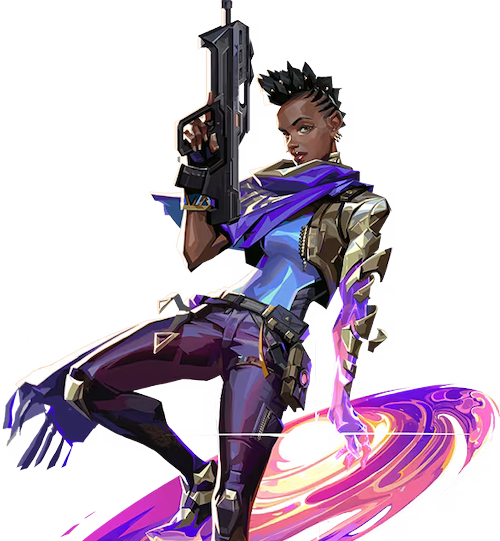

アストラ

国籍: ガーナ
ロール: コントローラー
アストラは宇宙の力を操るエージェントで、星を設置して様々な効果を発動することができます。戦場全体を見渡し、味方をサポートしながら敵の動きを制限することが得意です。
公式トレーラー
スキル
| スキル名 | 値段 | 所持上限 | 説明 |
|---|---|---|---|
| グラビティウェル (C) | 200 | 2個 | 星を配置し、再起動することでグラビティウェルを生成。範囲内の敵を中央に引き寄せ、数秒後に爆発して敵を脆弱状態にする。 |
| ノヴァパルス (Q) | 150 | 2個 | 星を配置し、再起動することでノヴァパルスを起動。範囲内の敵をスタン状態にする。 |
| ネビュラ / ディスパース (E) | 無料 | 2個 | 星を配置し、再起動することでネビュラ (スモーク) を発生させる。ディスパースを使うと星を一時的に回収し、数秒後に再度配置可能。 |
| アストラルフォーム / コズミックディバイド (X) - アルティメット | - | 1個 | アストラルフォームでマップ全体を見渡し、星を自由に配置できる。コズミックディバイドを使うと、マップ全体を横断する巨大な壁を生成し、敵の弾丸を通さず、音も遮断する。 |
立ち回りとおすすめマップ
攻めの立ち回り
アストラはアストラルフォームを使い、サイトへの侵入前に星を配置しておきます。グラビティウェルやノヴァパルスで敵を制圧し、ネビュラで視界を遮りながら味方をサポートします。
守りの立ち回り
守りでは、サイト入口に星を配置し、敵の侵攻を遅らせるためにグラビティウェルやノヴァパルスを使用します。ネビュラを活用して視界を遮り、敵の進行を妨げます。
コズミックディバイドの活用
コズミックディバイドはサイトへの侵入時やリテイク時に強力なツールです。敵の弾丸を防ぎ、音も遮断するため、味方と一緒に安全に移動することができます。
星の配置と再配置
アストラの星は再配置可能なので、状況に応じて適切な位置に移動させることが重要です。攻撃時と防衛時で星の配置を変えることで、柔軟な対応が可能です。